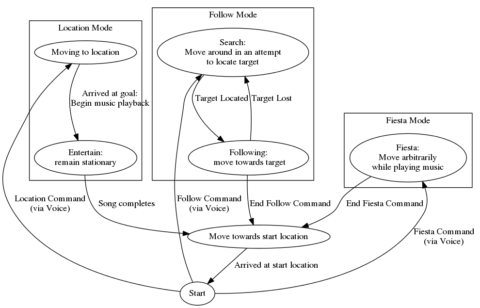
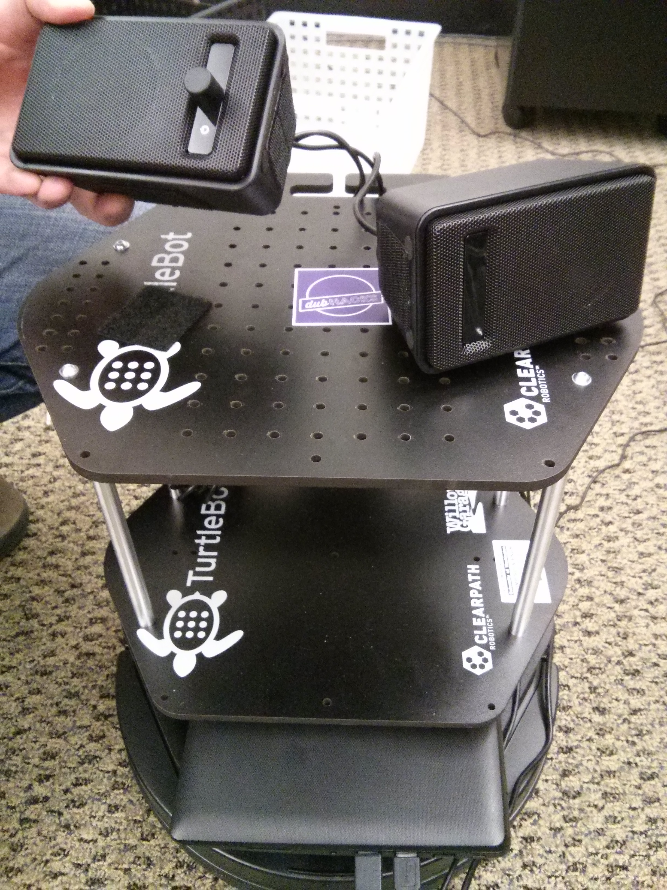
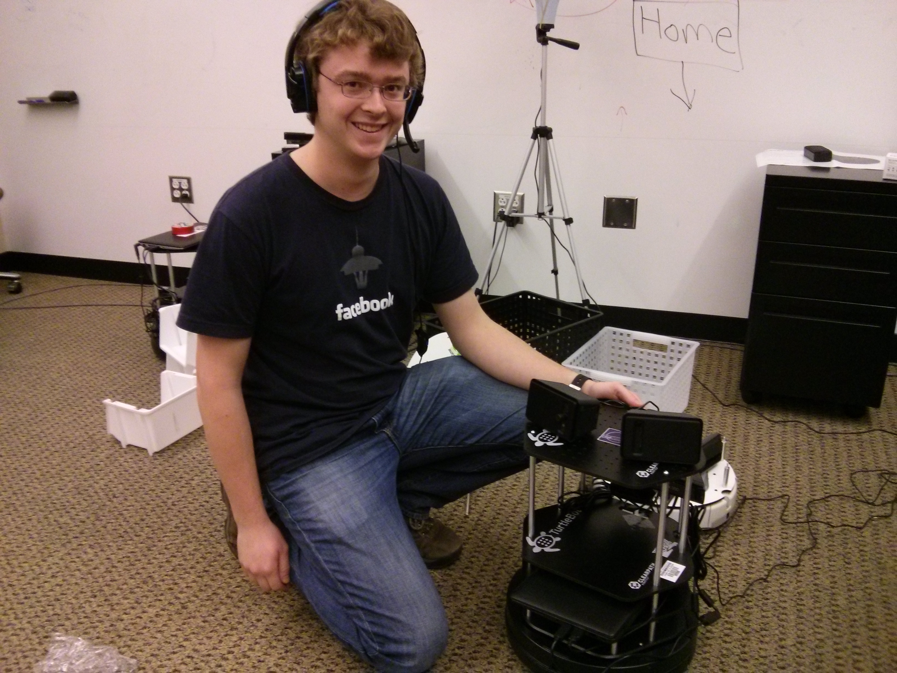
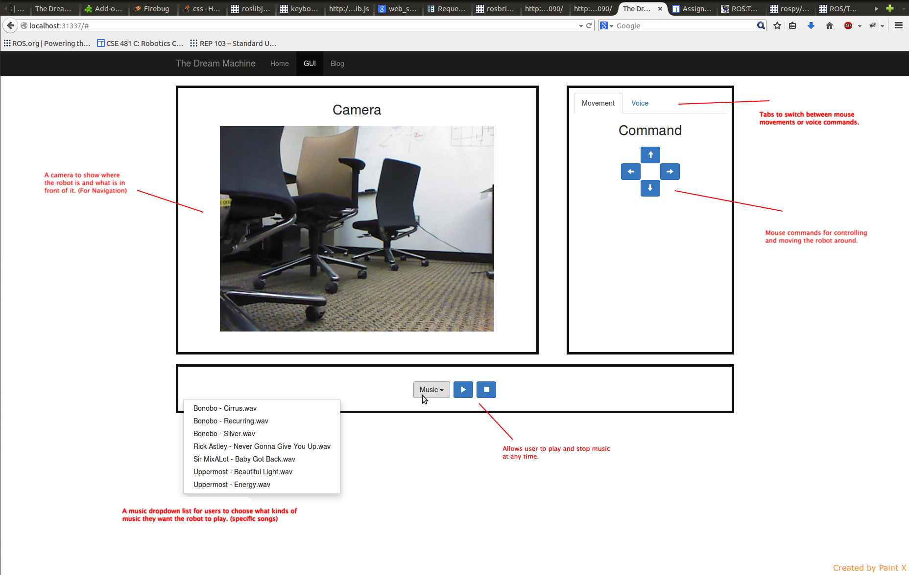
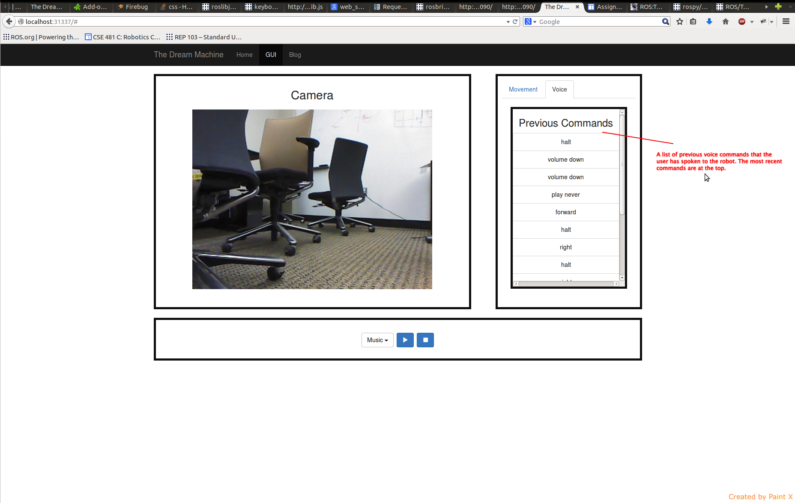
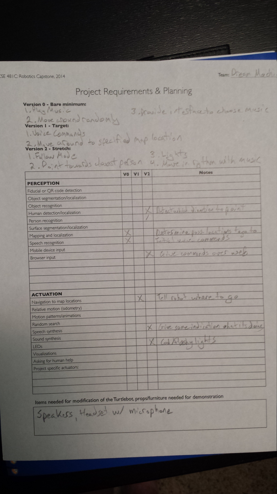
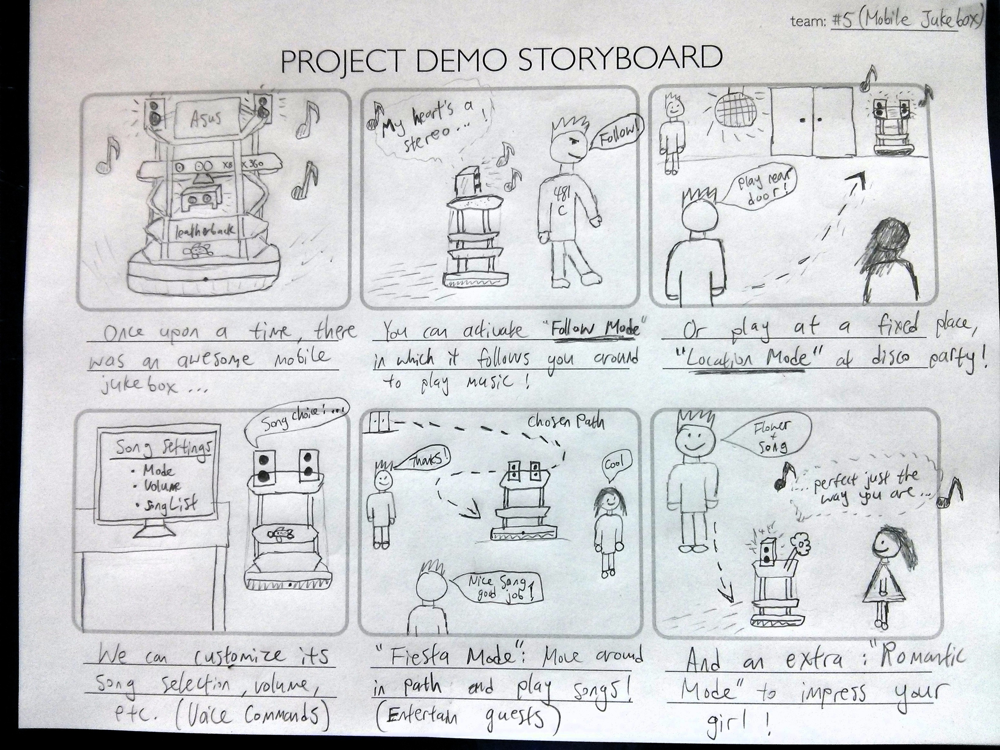

Blog #10
Final Presentation: Evaluation PlanBlog #9
The evaluation plan for functional and user experience is linked in Google Docs:Evaluation Plan
Blog #8
This video demonstrates our V0 plus some features from V1:- Playing music
- Moving around randomly (Fiesta Mode)
- Graphical interface for choosing music
- Graphical interface controlling playback of music
- Voice interface for choosing music
- Voice interface for controlling playback of music
- Voice interface for starting and ending Fiesta Mode
Blog #7
-
Finite State Machine for our robot:
 -
Robot with speakers attached by velcro:

Our star member Nat with the boombot:

Blog #6
-
Image of our paper prototype:

-
Image of our working GUI with label explainations:


-
Video of GUI Implementation and interaction:
Blog #5
-
Fiducial tracking:
-
Leg Detector
We were unable to get the leg detector working. We tried using softshell , and made sure to remove the scan:=base_scan argument. Still nothing. We tried several other things based on searches Adam did, including changing the frame from odom_combined to camera_depth_frame (in a bunch of source files). We also tried running it with robot_pose_ekf open because somebody said that might help and the rqt graph indicated it depended on it. We made sure that valid data was being published to /scan. We tried looking at the rqt_graph thing but could not make sense of the topics being published/listened to. We looked through the source code for the leg_detector to see if there were any constants that we could plausibly change. None of these things work. We didn't try using pointcloud_to_laserscan because we already have data being published on /scan.
Blog #4
- Projects with related components:
-
Lab 7 video:
This video shows our command line interface used to direct our turtlebot to specific locations and regions. A region is represented as a circle, and when sent to a region, the robot picks a random point in the region and moves there.
Blog #3
- Requirements and Plan:
 - Shopping list:
We decided to get two cheap speakers and two cheap headsets with microphones so that we would have a couple options, and we could use whatever works best. - Turtlebot homing video:
{kind=link}
Blog #2
-
Finalized project: Mobile Jukebox
We will put speakers on top of the turtlebot to make a mobile jukebox. We wanted to make a mobile jukebox because we feel like it will add more uniqueness and spice to people's regular lives and at party events. The mobile jukebox will be more interactive and immerse itself during parties as it will move around the party floor as it see fit or to the sound of the music. It will also have different modes to help people in different situations as described below.
It will enable several interesting interactive functions:- Voice commands: The jukebox will accept commands via voice. Location or follow mode can be activated, and specific songs can be chosen. Play, pause, and volume control will be supported. We may use a microphone on the turtlebot itself, but it might not work well while songs are playing. We will consider using microphones elsewhere.
- Follow mode: The jukebox will follow a person around while playing music that they have selected.
- Location mode: The jukebox will move to a specific point selected from a predefined set of locations and begin playing music.
- Fiesta mode: The jukebox will move in a set path or to the sound of music in the dance floor to entertain guests.
- Romantic mode: The jukebox will move toward a person of interest while playing a romantic song with a flower on top of the robot.
-
Our Storyboard:

- Some big challenges for the mobile jukebox is listening and acknowledging correct voice commands because of the noisy environments that it will operate in. We will make sure to double check the commands for accuracy.
- Having the mobile jukebox move to the correct locations or moving in such a way that it will interact with the dance floor can be tricky as well. We will need some clever algorithms to tell the robot to move in correct and desired paths.
-
This is a video of our turtlebot following Adam. It first rotates to face him, then moves forward. Currently, the data processing is very slow, and it means that the turtlebot moves very slowly.
Blog #1
- Team members:
-
Adam Stephenson

Adam can juggle and can solve a Rubik's cube in under a minute. -
Nat Mote

Nat jumps out of airplanes for fun. -
David Liang

David likes to play soccer, and wants to play against robots someday.
-
Adam Stephenson
- Ideas:
- Mobile Jukebox: The turtlebot responds to spoken requests for specific songs in specific locations
- Object Locator: Make easy-to-recognize objects, and have the robot search the area for the object.
- BeerBot: Web interface that allows ordering of beer (or other suitable beverages), using an attendant to load the beverage.
- Lab 2:

This is a picture of a simulated robot trapped in a room. The robot moves until it collides with a wall, and then backs up and rotates, similar to a roomba. The True/False on the right indicates when the wall was hit.